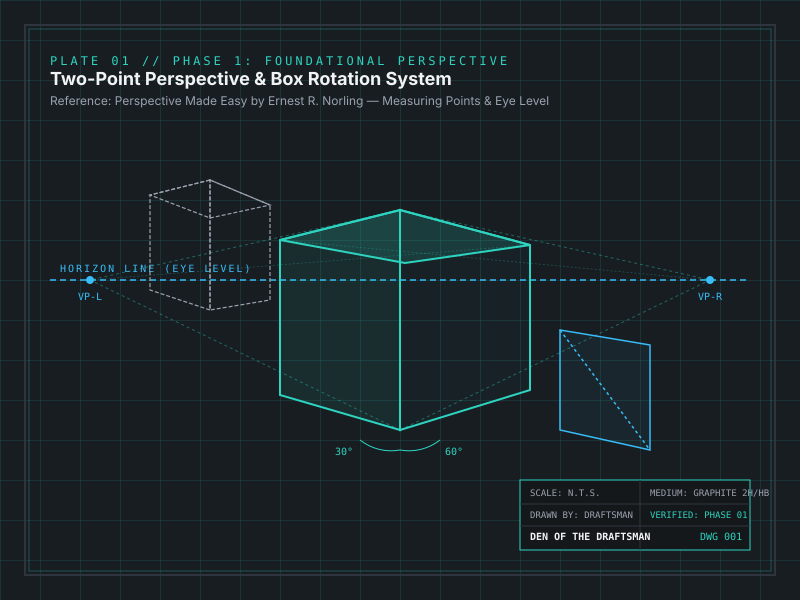
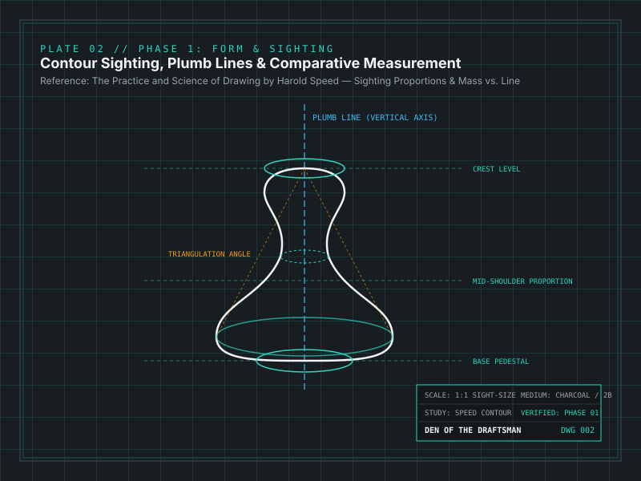
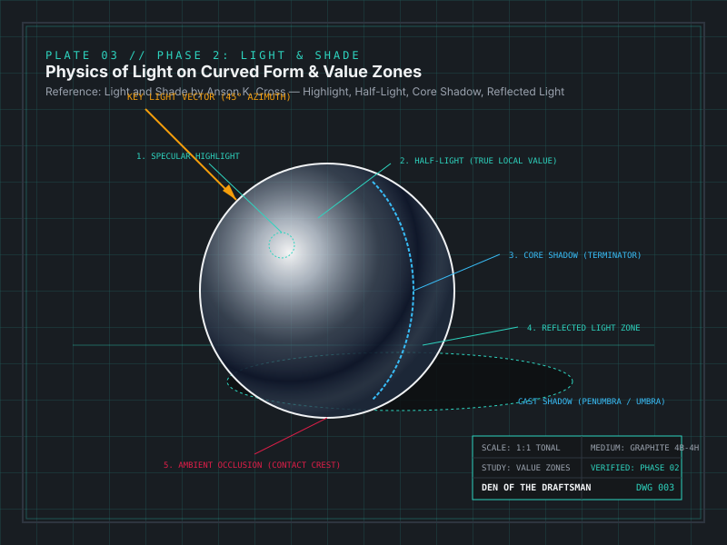

Portfolio & Study Archive
Selected Works
A curated catalog of exercise plates, geometric perspective studies, and finished technical illustrations. Click any plate to open the full-resolution inspection lightbox with complete material and dimensional specifications.


How to Update Plates During Your Journey
Each card above is calibrated with exact metadata attributes: data-full, data-title, and data-desc (Year, Medium, Surface, Dimensions, and Book Reference).
When you scan a new drawing from your board, save the high-res file to images/fulls/plate-XX.jpg and thumbnail to images/thumbs/plate-XX.jpg, then update the card's src and data-full in gallery.html. The lightbox will instantly display your hand-drawn piece full-screen.